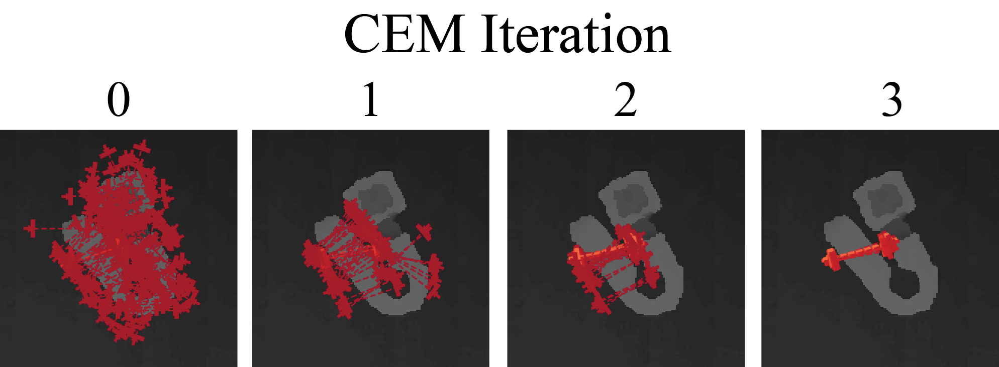

Grasp Planning¶
Grasp planning involves searching for the grasp with the highest predicted probability of success given a point cloud. In the gqcnn package this is implemented as a policy that maps an RGBD (color + depth) image to a 6-DOF grasping pose by maximizing the output of a GQ-CNN with the Cross Entropy Method. For details, see our ICRA 2017 workshop abstract.
This part of the tutorial walks through the script policy.py which is included in the gqcnn repository under examples/. The corresponding template configuration file is cfg/examples/policy.yaml.
Edit the Configuration File¶
First, update the parameters of your configuration file (ex. policy.yaml) to point to a GQ-CNN model:
policy:
gqcnn_model: /path/to/your/model/
For example, this could be the path to the model trained in the previous example (e.g. /home/user/Data/models/grasp_quality/model_ewlohgukns)
Run the Example Python Script¶
From a new terminal run the following out of the root of your gqcnn repo:
python examples/policy.py /path/to/your/policy/configuration
You should see a sequence of images similar to these:
{kind=link}
The final planned grasp will be overlayed on the original color and depth images

You can also try out grasp planning on multiple objects by changing the input data directory in the configuration file:
sensor:
image_dir: data/rgbd/multiple_objects
ROS Package¶
We are currently developing a ROS service that can be used to plan grasps from RGBD images using GQ-CNNs. We plan to release the ROS package by June 28, 2017.